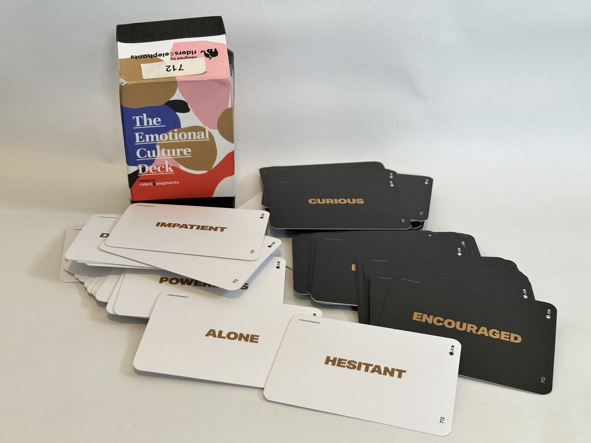
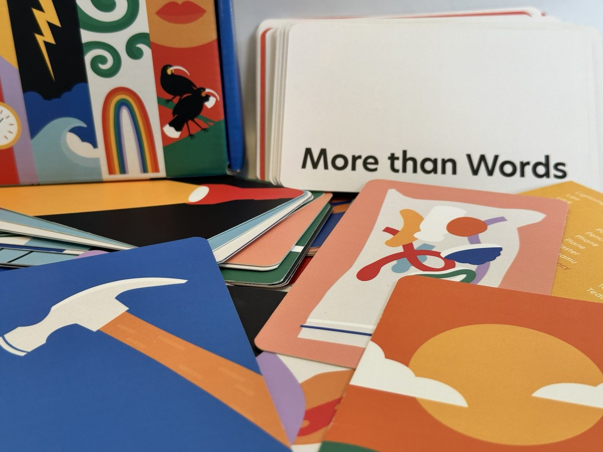
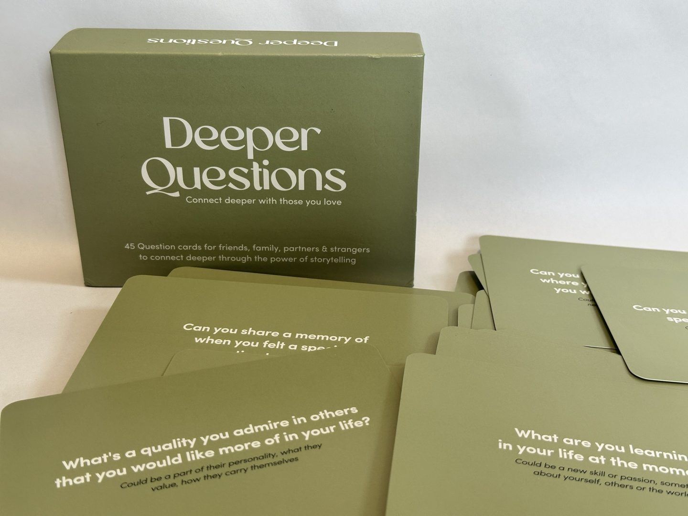
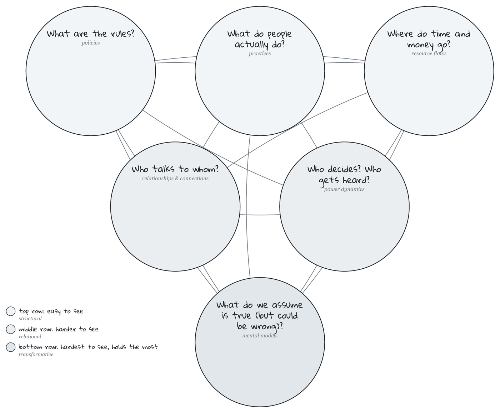
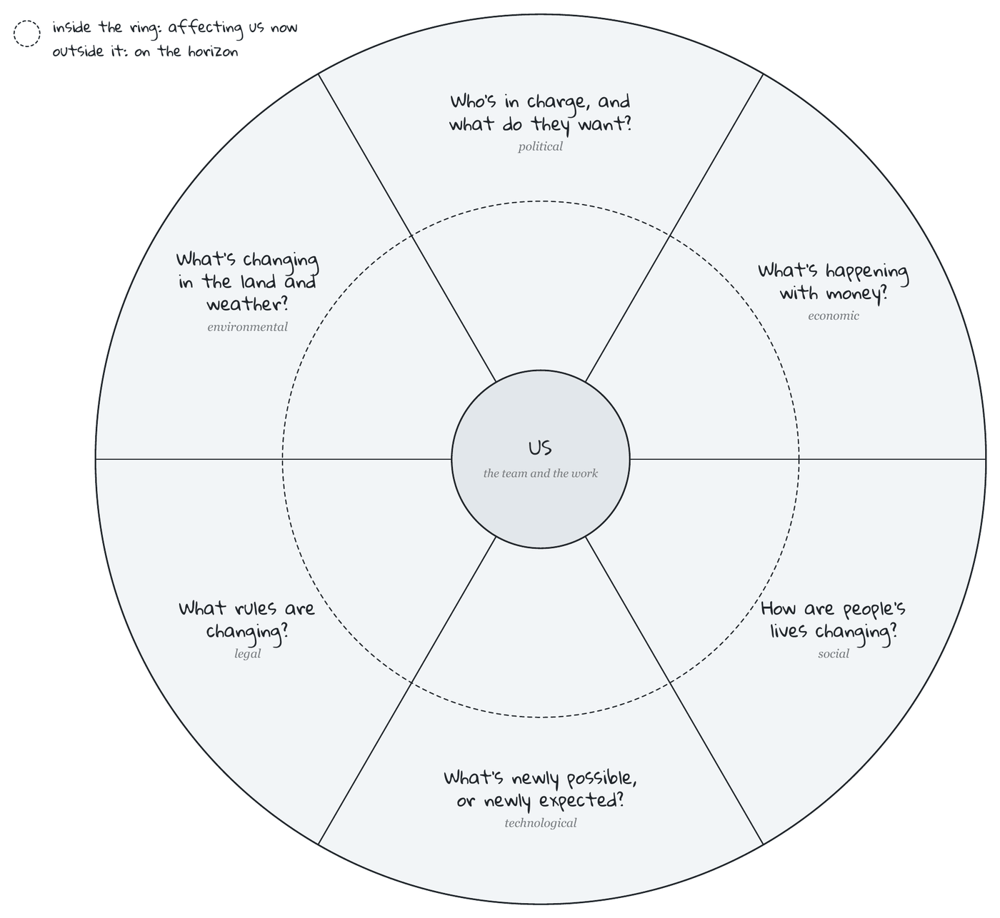
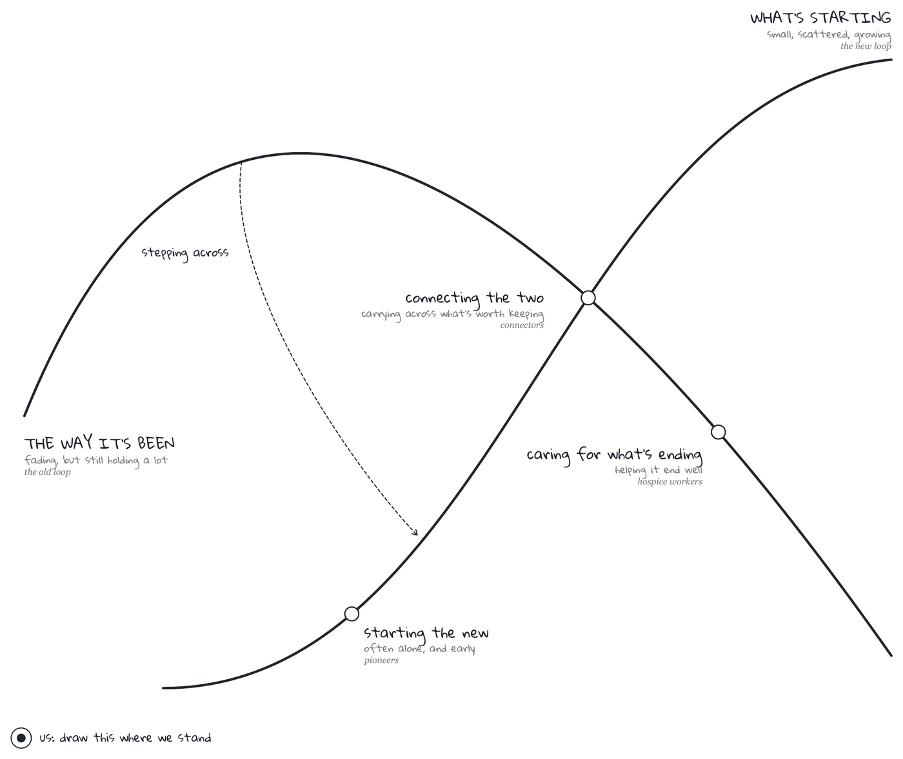
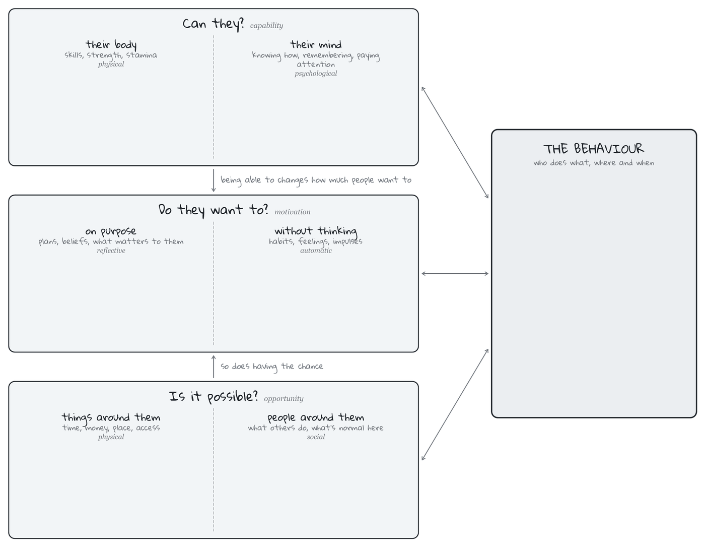
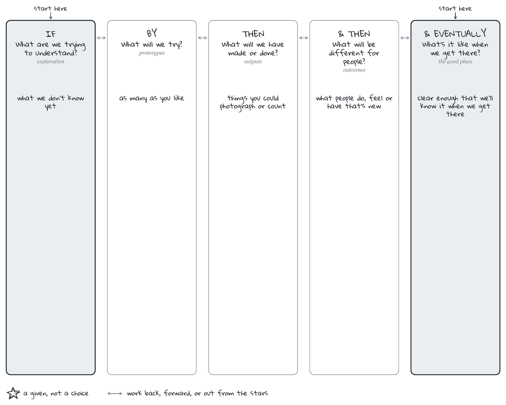
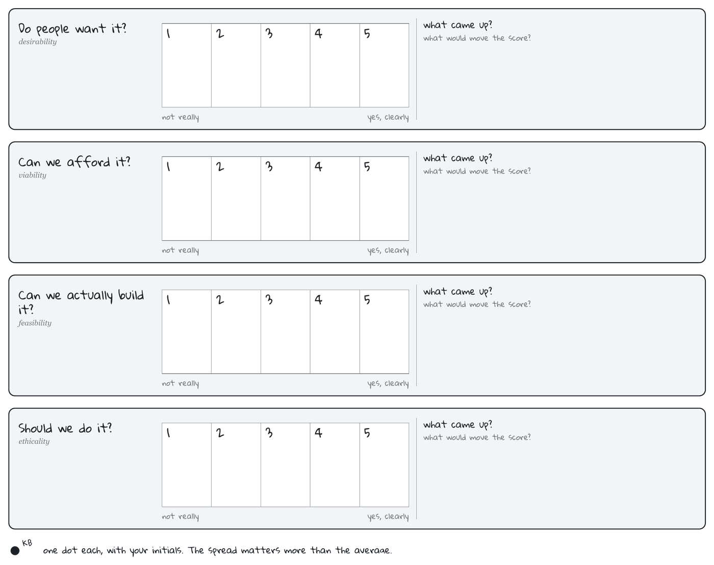

How are we feeling as a team, and how do we want to feel?
By riders&elephants

What does this picture say that we don't have words for, yet?
By Sabrina David

What haven't we asked each other yet?
By Kiran Patel

What's really holding this situation in place?
After Kania, Kramer & Senge, FSG · A3 worksheet (PDF) (opens in new tab)

What's changing around us?
After Francis Aguilar · A3 worksheet (PDF) (opens in new tab)

What's ending, and what's beginning?
After Wheatley & Frieze, Berkana Institute · A3 worksheet (PDF) (opens in new tab)

Why do people do what they do?
After Michie, van Stralen & West · A3 worksheet (PDF) (opens in new tab)

How will we get from here to there?
After Ingrid Burkett · A3 worksheet (PDF) (opens in new tab)

Is this idea worth doing?
After Alexandra Almond · A3 worksheet (PDF) (opens in new tab)
